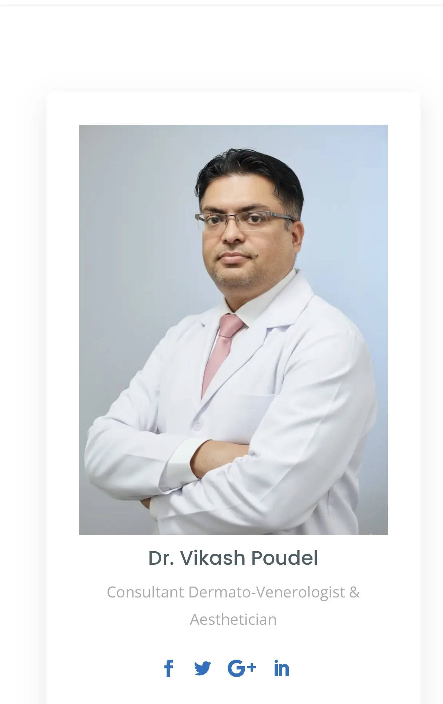

Dr. Vikash Paudel
Patan Hospital (PAHS) · Dr. Vikash's Skin & STI Clinic (Shankhamul Healthcare) · Elite Health Clinic
Dr. Vikash Paudel is a Nepal Medical Council–registered Senior Consultant Dermatologist, Venereologist, and Associate Professor at Patan Hospital, Patan Academy of Health Sciences (NMC #9111). With over a decade of clinical experience in medical dermatology, dermatosurgery, dermoscopy, pediatric dermatology, and confidential sexual health care, he sees patients across Lalitpur, Kathmandu, and Dhangadhi, as well as through structured teledermatology consultations.
View current clinic locations, hours, and online teledermatology booking options on the appointment page.
Clinical Practice
Dr. Vikash Paudel provides evidence-based diagnosis and individualized treatment plans for adults, adolescents, and children with skin, hair, nail, and mucosal conditions. His clinical approach emphasizes accurate diagnosis, clear patient education, and avoiding unnecessary medications or topical steroid misuse.
Acne, Pigmentation & Medical Dermatology
Targeted medical and procedural care for adolescent and adult acne, post-acne marks and scarring, melasma, eczema, psoriasis, urticaria, seasonal flare-ups, and pediatric skin disorders.
Hair Loss & Scalp Consultations
Diagnostic evaluation (including trichoscopy/dermoscopy) and medical management for androgenetic pattern hair thinning, telogen effluvium, alopecia areata, seborrheic dermatitis, and inflammatory scalp conditions.
Venereology & Confidential Sexual Health
Discreet, non-judgmental evaluation, screening, and evidence-based treatment for sexually transmitted infections (STIs) and genital dermatoses in a private clinical setting.
Dermatosurgery, Dermoscopy & Teledermatology
Non-invasive dermoscopic evaluation of moles and lesions, skin biopsies, cyst and mole excision, chemical peels, scar revision, laser procedures, and online teledermatology across Nepal and abroad.
Education and Training
Dr. Paudel completed his undergraduate and postgraduate medical degrees in Nepal, followed by international clinical fellowships and specialized training in dermatosurgery, aesthetic dermatology, and infectious skin diseases.
-
Postgraduate
Doctor of Medicine (MD) in Dermatology, Venereology, and Leprology
Institute of Medicine (IOM), Tribhuvan University, Kathmandu, Nepal — Postgraduate residency and specialist clinical training in medical dermatology, sexually transmitted infections, and leprosy.
-
Fellowships
Advanced Fellowships & International Masterclasses
Completed focused fellowships, procedural training, and international masterclasses in aesthetic dermatology, dermatosurgery, psoriasis, and infectious dermatology across Nepal, India, South Korea, Japan (Okinawa & Tokyo), the United Arab Emirates (Dubai), and the Philippines.
-
Undergraduate
Bachelor of Medicine and Bachelor of Surgery (MBBS)
College of Medical Sciences, Kathmandu University, Nepal — Graduated with academic distinctions as a Government of Nepal scholarship recipient.
-
Foundation
Secondary & Higher Secondary Education
Completed secondary schooling at Chetana Vidyashram and higher secondary science education at Pinnacle Academy with distinction.
Academic and Teaching Appointments
Alongside outpatient consultations, Dr. Paudel leads academic case-based discussions for medical residents, supervises postgraduate trainees, and provides specialist inpatient and outpatient dermatology care.
Current Appointments
- Senior Consultant Dermatologist, Venereologist & Associate Professor — Patan Hospital, Patan Academy of Health Sciences (PAHS), Lalitpur: Provides tertiary inpatient and outpatient dermatology care, leads resident case-based clinical discussions, and teaches undergraduate and postgraduate medical trainees.
- Lead Consultant Dermatologist — Dr. Vikash's Skin & STI Clinic / Shankhamul Healthcare (Kathmandu) & Elite Health Clinic (Lagankhel, Lalitpur): Conducts evening outpatient dermatology, venereology, and procedural clinics (Sun–Fri, 4:00 PM – 7:00 PM NPT).
- Visiting Consultant Dermatologist — Shubharambha Skin Centre (Dhangadhi): Provides periodic Saturday specialist dermatology clinics for patients in Sudurpashchim Province (Saturdays, 9:00 AM – 5:00 PM NPT).
Previous Clinical & Academic Roles
- Assistant Professor & Consultant Dermatologist: Served in progressive academic faculty and specialist hospital dermatology posts prior to promotion to Associate Professor and Senior Consultant.
- Postgraduate Resident in Dermatology, Venereology & Leprology (IOM, Tribhuvan University): Completed intensive clinical rotations in inpatient dermatology, STI clinics, leprosy care, and dermatosurgery.
Research and Publications
Dr. Paudel conducts clinical and epidemiological dermatology research in Nepal while producing bilingual patient education articles and animated public health scripts to counter skin health myths and topical steroid misuse.
- Core Research Interests: Acne and pigmentary disorders, infectious dermatoses, topical steroid-damaged face (TSDF), pediatric dermatology, psoriasis, dermoscopy, dermatologic surgery, and teledermatology care delivery.
- Selected Publications & Academic Profiles: Author and co-author of peer-reviewed studies, clinical audits, and case reports indexed in PubMed, Google Scholar, and NepJOL. Explore his full bibliography and verified academic profile links on the Research & Publications page.
- Patient Education Articles & Video Scripts: Writes accessible educational guides—including seasonal skin care (Winter Skin Care Guide), acne myths (Acne Resource), hair loss (Hair Care Guide), and sexual health awareness (STI Education)—alongside national columns in The Kathmandu Post and Onlinekhabar and video explainers on the Dermatology Blog.
Editorial Roles and Recognition
Dr. Paudel contributes to medical publishing as a journal editor and peer reviewer and maintains active fellowships and memberships in national and international dermatology bodies. Detailed honors are listed on the Awards page.
- Editor-in-Chief — Nepal Journal of Dermatology, Venereology and Leprology (NJDVL): Leads editorial oversight and peer-review standards for the official scientific journal of the Society of Dermatologists, Venereologists and Leprologists of Nepal (SODVELON).
- Peer Reviewer — International & Institutional Medical Journals: Performs scientific peer reviews for the Journal of the European Academy of Dermatology and Venereology (JEADV) and the Journal of Patan Academy of Health Sciences (JPAHS).
- Nepal Medical Council (NMC) & Nepal Medical Association (NMA): Registered Specialist in Dermatology, Venereology, and Leprology (NMC Registration #9111).
- Society of Dermatologists, Venereologists and Leprologists of Nepal (SODVELON): Life Member and frequent academic speaker at national SODVELONCON conferences and regional symposiums.
- International Fellowships & Specialist Societies: International Fellow of the European Academy of Dermatology and Venereology (EADV), Member of the International Dermoscopy Society (IDS, since 2021), and Member of the International Society of Teledermatology (ISTD, since 2022).